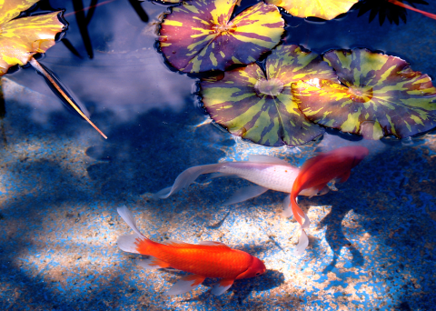
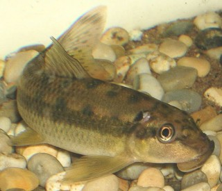
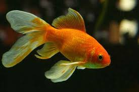
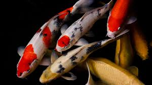

Pond Fish

The supply of fish types for a pond is enormous. Ranging from goldfish, gold orfes, sturgeon to koi carps and more. However, what types of fish do you choose for your pond? When making a choice you should reckon with the qualities of various fish types. There are fish which dig the bottom, fish which eat plants, fish which are nearly invisible because of their camouflage and fish which propagate at lightning speed. You can bring different kinds of fish together. In principle any type of pond fish can be brought together with any other type.(2)
Types of fish
- Surface fish
- Surface fish are fish which search feed at the pond surface and not on the bottom. Therefore you see these fish species swim better, moreover they do not make a mess of your pond. However, they need additional protection against a threatening calamity like a hungry heron or cat.
- Eye-catching fish
- Fish in natural water often have a camouflage, which protects them against herons and different enemies. In a pond you should rather introduce fish with an eye-catching colour. After all you want to see your fish. Protection can be applied in many different ways.
- Quickly propagating fish
- A pond can accommodate just a limited number of fish, without it getting into trouble with the biological cycle. If there are too many or too large fish in a pond, the pond plants and the filter can no longer cope with the amount of waste materials and the pond will get turbid than. So, it is important to choose fish which do not grow too fast and which do not get hundreds of young ones per annum.
Suitable pond fish
- Algae eater or Gobi

- A Gobi has a small brown bobby with black patterns. As this fish is living in its natural habitat close to the soil, often under orfe between stones, it is duly camouflaged there.
- Goldfish, the best-known pond fish

- A goldfish is the best-known pond fish. It feels quite at home in a pond. It is a colour variety of the carp species carassius gibelio and it is a cheap, strong and hardy pond fish. Under the right conditions goldfish can reach a length of 14 in. This carp like fish was imported into Europe from China in the 17th century. In Asia the fish have been raised as ornamental fish for over 4000 years, however, also as fish for consumption. The best-known goldfish include the Sarasa fish and the comet tail.
- Enjoy koi carps

In the past few years keeping koi fish in ponds is becoming more and more popular. A Koi carp or Cyprinus Carpio is better known under the name Japanese koi carp, often abbreviated to Japanese koi or simply koi. It is a splendid coloured fish, which, under favourable conditions, can grow to a length of 28 to 32 inch and may become as many as 40 years old. A koi carp will be soon trained to the hand and will even eat out of your hand. A koi pond should be at least 60 in deep (preferably deeper still). This necessary to keep the temperature in the pond as constant as possible and for the fish to hibernate. For the number of koi in your pond you should go by the rule, one fish per 1,000 litres of pond water.
back to main page